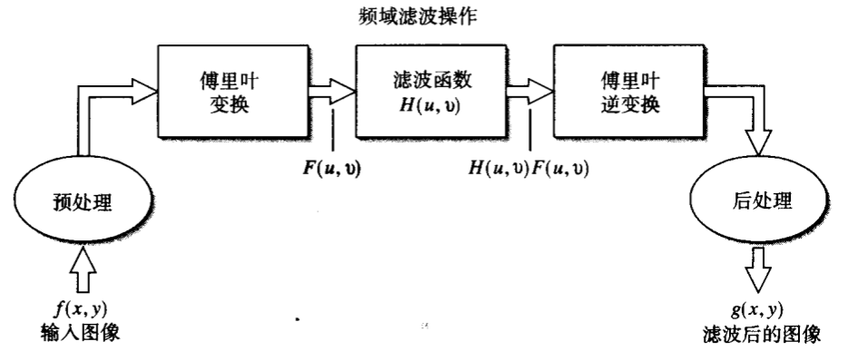

频域滤波实验报告
实验内容
1.对一幅原始图像分别做理想、巴特沃斯、高斯低通滤波及高通滤波处理，对比实验效果。
2.对一幅原始图像通过高频增强滤波增强图像。
实验过程
实验题一
频域滤波Matlab基本步骤：

使用函数
paddesize获得填充参数PQ = paddesize(size(f));得到使用填充的傅里叶变换
F = fft2(f, PQ(1), PQ(2));使用本章讨论的任意一个方法，生成一个大小为$PQ(1)\times PQ(2)$的滤波函数$H$。该滤波函数的格式必须如下图b所示。另外，如果它若图a所示，则在使用该滤波器前，需要令
H = fftshift(H);将变换乘以滤波函数
G = H.*F;获得G的傅里叶逆变换实部
g = real(ifft(G));将左上部的矩形修建为原始尺寸大小
g = g( 1:size(f, 1), 1:size(f, 2) );
！！步骤2，步骤567可以用以下的函数dftfilt()代替！！
代码：
1 | %%主函数main.m |
实验结果：
原图
滤波后
实验题二
目的：利用高频增强滤波增强图像。
原理：
a是偏移量，b是乘数，$H_{hp}(u,v)$是高通滤波器的传递函数；
代码：
1 | % hfef.m |
结果：